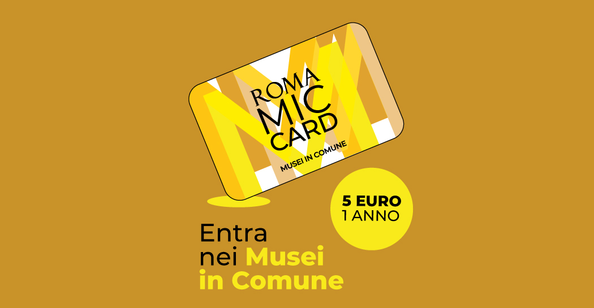
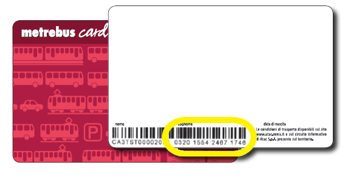

Managing your money in Rome
Let’s be honest: Rome isn’t cheap. But with a bit of planning (and some street smarts), you can survive on your Erasmus grant and still enjoy la dolce vita.
First, the Erasmus grant varies depending on your home university – some students receive a decent amount, others much less. So make sure you check carefully what you're entitled to before arriving.
Look for discounts with your student card, buy groceries at Todis or Coop, cook at home (sometimes), and use Too Good To Go. Take the metro instead of Ubers, and split bills whenever you can. If you are going to use public transport a lot, don't forget to buy the annual transport card, because you will make the most of it.
Don’t forget about Erasmus and EU youth discounts! One of the best tips: get the MIC card – it gives you free access to many of Rome’s museums if you're a resident under 25 or a student. Also, many museums and historical sites offer free entry days each month, so take advantage of those too!
Make a monthly budget and stick to it. Or don’t, and just suffer mid-month like the rest of us. Either way, you’ll learn fast what’s worth spending on and what’s not.
 